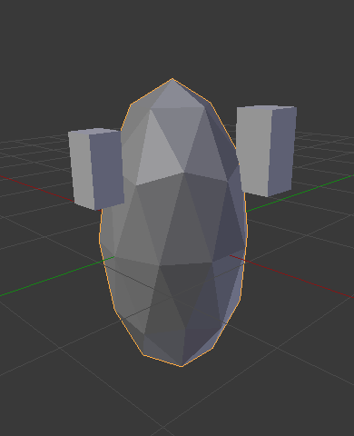

Приріднення Об'єктів -- Parenting Objects¶
Зробити Приріднення -- Make Parent¶
Орієнтир
| Mode: | Object Mode |
|---|---|
| Menu: | |
| Hotkey: | Ctrl-P |
При моделюванні складного об'єкта, такого як годинник, ви можете обрати моделювати різні частини його, як окремі об'єкти. Однак, усі ці частини можуть бути прикріплені одна до одної. У таких випадках ви схочете визначити один об'єкт, як предок для усіх інших нащадків. Переміщення, обертання або масштабування предка також впливає на нащадків.
Для приріднення об'єктів виділіть принаймні два об'єкти (виділіть спочатку об'єкти, що будуть нащадками -- Child Objects, та останнім виділіть об'єкт, що буде предком -- Parent Object) та натисніть Ctrl-P. Спливне меню «Задати Приріднення До» -- Set Parent To дозволяє вам вибрати один з можливих типів приріднення. Після вибору одного з пунктів меню «Задати Приріднення До» -- Set Parent To створиться відношення «нащадок/нащадки-предок».
Останньо виділений об'єкт буде «Активним Об'єктом» -- Active Object (підсвічується світло-оранжевим каркасом) і він стане Об'єктом-Предком -- Parent Object. Якщо ви виділили одночасно кілька об'єктів перед виділенням майбутнього предка, то всі вони будуть нащадками цього предка та будуть знаходитися на однаковому рівні ієрархії (вони будуть «спільнопредкові» -- "siblings").
The Set Parent To pop-up menu is context-sensitive, which means the number of entries it displays can change depending on what objects are selected when the Ctrl-P shortcut is used.
For non-inverse-mode, press Shift-Ctrl-P instead. This creates an alternative parent-child-relationship where child objects exist entirely in the parent's coordinate system. This is the better choice for CAD purposes, for example.
Переміщення, обертання або масштабування предка зазвичай також дає пересування/обертання/масштабування нащадка/нащадків. Однак, переміщення/обертання/масштабування нащадка/нащадків не призводить до пересуву/оберту/масштабування предка. Іншими словами, напрямок впливу здійснюється від предка до нащадка, а не від нащадка до предка.
Загалом, коли використовуються для приріднення об'єктів Ctrl-P або «заголовок 3D Огляду > Об'єкт > Приріднення» -- , то об'єкти-нащадки -- Child Objects можуть мати тільки одного об'єкта-предка -- Parent Object. Якщо об'єкт-нащадок -- Child Object вже має об'єкт-предок -- Parent Object і ви даєте його іншого предка, то Blender вилучить попереднє приріднювальне відношення та створить нове.
Blender підтримує багато різних типів приріднення, що перелічені нижче:
- Об'єкт -- Object
- Кістка -- Bone
- Вершина -- Vertex
- Вершина (Трибічник) -- Vertex (Triangle)
Уклади
Окрім приріднення виділених об'єктів це додає Модифікатор -- Modifier або Примус -- Constraint для нащадкових об'єктів з предком як цільовим об'єктом, або активує властивість приріднення, як наприклад «Слідування Шляхом» -- Follow Path.
- Деформації Арматури -- Armature Deform
- Деформації Кривої -- Curve Deform
- Слідування Шляхом -- Follow Path
- Обмежник шляху -- Path Constraint
- Деформації Решітки -- Lattice Deform
Приріднення до об'єкта -- Object Parent¶
Приріднення до об'єкта -- Object Parent -- це найбільш загальна форма приріднення, яку підтримує Blender. Якщо взяти виділені об'єкти та зробити останньо виділений об'єкт об'єктом-предком -- Parent Object, то усі інші виділені об'єкти будуть об'єктами-нащадками -- Child Objects. Нащадкові об'єкти будуть успадковувати трансформування предка. Предківський об'єкт може бути будь-якого типу.
Приріднення об'єкта зі утримуванням трансформацій -- Object (Keep Transform)¶
Команда приріднення «Об'єкт (Утримувати Трансформації)» -- Object (Keep Transform) Parent працює дуже подібно до команди звичайного приріднення «Об'єкт» -- Object Parent, в основному відрізняючись тим, що нащадкові об'єкти -- Child Objects будуть пам'ятати будь-які попередні трансформування, застосовані попередньо до предківського об'єкта -- Parent Object.
Оскільки пояснення цього легким для розуміння технічним способом є складним, то давайте натомість скористаємося прикладом для його ілюстрування.
Припустімо, що ми маємо сцену, що містить три об'єкти -- два об'єкти порожняки під іменами "EmptyA" та "EmptyB" та один об'єкт Мавпа -- Monkey. Ілюстрація Сцена без приріднення. показує ці три об'єкти без наявного відношення приріднення.
Сцена без приріднення.
If you select the Monkey object by RMB click and then Shift-RMB click "EmptyA" object and press Ctrl-P and finally select Object from the Set Parent To pop-up menu. This will result in "EmptyA" object being the Parent Object of the Monkey object. With only "EmptyA" selected rotating/scaling/moving it will result in the Monkey object being altered respectively.
Масштабування об'єкта "EmptyA" дасть те, що Monkey стане меншим та пересунеться трохи вліво.

Мавпа є нащадковим об'єктом предківського об'єкта "EmptyA".
Якщо ви виділите тільки об'єкт Мавпа -- Monkey клацком RMB, далі з Shift-RMB клацнете на об'єкті "EmptyB", натиснете Ctrl-P та виберете у спливному меню «Задати Приріднення До» -- Set Parent To пункт «Об'єкт» -- Object. То це дасть у результаті те, що об'єкт "EmptyB" стане предківським об'єктом -- Parent Object для об'єкта Monkey. Зауважте, що коли ви змінюєте предка для Monkey, то масштаб Мавпи також змінюється.

Тут мавпа є нащадковим об'єктом об'єкта "EmptyB".
Це відбувається, тому що для об'єкта Monkey тут ніколи масштаб не змінюється безпосередньо, така зміна походить від зміни масштабу об'єкта "EmptyA", нащадком якого він був. Зміна приріднення Мавпи від попереднього об'єкта до об'єкта "EmptyB" призведе до того, що непрямі зміни у масштабі вилучаться, оскільки новий об'єкт "EmptyB" не мав змін у масштабі.
Це часто необхідна поведінка, але також інколи корисно, щоб, якщо ви змінюєте предківський об'єкт -- Parent Object, то нащадковий об'єкт Child Object зберіг будь-які попередні трансформування, отримані від старого об'єкта-предка -- Parent Object; і якщо натомість при зміні предківського об'єкта -- Parent Object для Monkey з "EmptyA" на "EmptyB" ви виберете тип приріднення «Об'єкт (Утримувати Трансформації) -- Object (Keep Transform), Мавпа збереже інформацію про своє масштабування, отримане від старого предка "EmptyA", коли буде призначатися новий предок "EmptyB";

Метод приріднення «Об'єкт (Утримувати Трансформації)» -- Object (Keep Transform).
Якщо ви хочете відстежити описане вище, тут є blend-файл, в якому використовується описаний метод приріднення «Об'єкт (Утримувати Трансформації)» -- Object (Keep Transform):
Приріднення до кістки -- Bone Parent¶
Приріднення до кістки дозволяє вам робити певну кістку в арматурі предківським об'єктом -- Parent Object для іншого об'єкта. Це означає, що при трансформуванні арматури нащадковий об'єкт -- Child Object буде рухатися тільки тоді, коли певна кістка, що є предком для нього, буде рухатися.

Three pictures of armatures with four bones.
На ілюстрації Three pictures of armatures with four bones. 2-га кістка є предком-кісткою нащадкового об'єкта - Куба. Куб буде трансформуватися, тільки якщо 1-ша або 2-га кістка буде трансформована. Зауважте, що зміна 3-ої та 4-ої кісток не буде впливати на Куб.
Для використання приріднення до кістки ви повинні спочатку виділити усі нащадкові об'єкти, які ви хочете приріднити до певної кістки арматури, далі клацніть Shift-RMB для виділення об'єкта арматури, ще далі перемкніться у Режим Пози -- Pose Mode і потім виділіть клацком RMB конкретну кість,яка має стати кісткою-предком. Після цього натисніть Ctrl-P та виберіть пункт «Кістка» -- Bone у спливному меню «Задати Приріднення До» -- Set Parent To.
Відтепер трансформування цієї кістки у Режимі Пози -- Pose Mode буде спричиняти також трансформування нащадкових об'єктів.
Відносне Приріднення до кістки -- Relative Parenting¶
Приріднення «Кістка Відносно» -- Bone Relative -- це опцію, яку ви можете перемикати для кожної кістки. Це працює подібним чином, як і звичайне приріднення до кістки -- Bone, з однією відмінністю.
При звичайному прирідненні до кістки -- Bone, якщо ви приріднили до кістки деякі нащадкові об'єкти та виділили цю кістку і перемкнулися у Режим Правки -- Edit Mode, а потім пересунули цю кістку, то при перемиканні назад у Режим Пози -- Pose Mode для цієї кістки, нащадковий об'єкт, що приріднений до цієї кістки підхопиться назад у локацію кістки у Режимі Пози.

Single armature bone which has a child object cube parented to it using bone parenting.
На ілюстрації Single armature bone which has a child object cube parented to it using bone parenting. 1-ша картинка показує позицію куба та арматури перед тим, як кістка пересунута у Режимі Правки. 2-га картинка показує позицію куба та арматури після того, як кістка була виділена і пересунута у Режимі Правки, та перемкнуто було назад у Режим Пози. Зауважте, що нащадковий об'єкт пересунутий у нову локацію у Режимі Пози для кістки.
Приріднення «Кістка Відносно» -- Bone Relative працює по-іншому; якщо ви пересунете предківську кістку у Режимі Правки, то при перемиканні назад у Режимі Пози нащадкові об'єкти не будуть пересуватися у нову локацію для позованої кістки.

Single bone with bone relative parent to a cube.
На ілюстрації Single bone with bone relative parent to a cube. 1-ша картинка показує позицію куба та арматури перед пересувом кістки у Режимі Правки. 2-га картинка показує позицію куба та арматури після того, як кістка була виділена і пересунута у Режимі Правки, та перемкнуто було назад у Режим Пози. Зауважте, що нащадковий об'єкт не пересунувся у нову локацію позованої кістки.
Приріднення до вершини -- Vertex Parent¶
For objects of type curve, surface, mesh and lattice, there is the possibility to use one of its vertices or points as the parent of other objects. You can parent an object to a single vertex or a group of three vertices as well; that way the child/children will move when the parent mesh is deformed.
Приріднення до вершини у Режимі Правки¶
У Режимі Об'єкта -- Object Mode виділіть майбутніх нащадка/нащадків та останнім об'єкт предка. Натисніть Tab для переходу у Режим Правки -- Edit Mode та на предківському об'єкті виділіть одну вершину, що визначатиме одиничну точку, або виділіть три вершини, що визначатимуть ділянку (ці вершини не повинні формувати завершену грань; вони можуть будь-якими трьома вершинами на предківському об'єкті), а потім натисніть Ctrl-P та підтвердьте пунктом зі спливного меню.
У момент, якщо була виділена одинична вершина, то лінія відношення/приріднення буде нарисована від вершини до нащадка/нащадків. Якщо були виділені три вершин, то лінія відношення/приріднення буде нарисована від усередненого центру цих трьох точок (предківського об'єкта) до нащадка/нащадків. Відтепер, при деформуванні предківської сіті та руху обраних предківських вершини/вершин, також будуть рухатися нащадок/нащадки.
Приріднення до вершин у Режимі Об'єкта¶
Vertex parenting can be performed from object mode, this is done like regular object parenting, press Ctrl-P in object mode and select Vertex or Vertex (Triangle).
Будуть використані найближчі вершини з об'єкта, які б ви типово вибрали.

Маленькі куби можуть кожен автоматично приріднитися до тріади найближчий вершин на ікосфері за допомогою пункту «Вершина (Трибічник)» -- "Vertex (Triangle)" у спливному меню. |

Зміна форми об'єкта у Режимі Правки означає, що кожен з кубів наслідує свою вершину-предка відповідно. |

Зміна масштабу предківської ікосфери у Режимі Об'єкта означає, що нащадкові куби також змінять свій масштаб. |
{kind=link}
Цей пункт спливного меню приріднення означає, що користувачі можуть швидко установити велику кількість відношень приріднення до вершин та уникнуть стомливих зусиль установлення кожного відношення «предок-нащадок» до вершини окремо.
Ghi chú
It is in fact a sort of "reversed" hook.
Опції¶
Move Child¶
Ви можете пересунути нащадковий об'єкт до його предка, зчистивши його початок. Це не впливає на відношення між предком і нащадком. Виділіть нащадковий об'єкт та натисніть Alt-O. Після підтвердження нащадковий об'єкт буде підхоплений у локацію предка. Скористайтеся Структуратором -- Outliner для перевірки, чи цей нащадковий об'єкт є все ще прирідненим.
Зчистити Приріднення -- Clear Parent¶
Орієнтир
| Mode: | Object Mode |
|---|---|
| Menu: | |
| Hotkey: | Alt-P |
You can remove a parent-child relationship via Alt-P.
- Зчистити Приріднення -- Clear Parent
- If the parent in the group is selected, nothing is done. If a child or children are selected, they are disassociated from the parent, or freed, and they return to their original location, rotation, and size.
- Зчистити та Утримати Трансформування -- Clear and Keep Transformation
Звільняє нащадки від предка та зберігає локацію, оберт та розмір, заданий для них предком.
See Non-Uniform Scale which may apply here.
- Зчистити Приріднення з Інверсією
Поміщає нащадки відносно предка, як вони були розміщені у глобальному орієнтирі. Це ефективно зчищає трансформування від предка на нащадках. Ієрархічні відношення не вилучаються, але коригувальна матриця («зворотно предку») зчищається з виділених об'єктів.
Наприклад, якщо предок було пересунуто на 10 одиниць вздовж осі X та задіяно «Зчистити Приріднення з Інверсією» -- Clear Parent Inverse, то будь-який виділений з нащадків звільняється та пересувається на -10 одиниць назад вздовж осі X. «Інверсія» використовує останнє трансформування; якщо предок було пересунуто двічі, на 10 одиниць кожен раз, у підсумку на 20 одиниць, то «Інверсія» перемістить нащадок тільки раз на 10 одиниць, а не на 20.
Поради¶

Огляд Структуратора -- Outliner.
There is another way to see the parent-child relationship in groups and that is to use the Outliner view of the Outliner editor. Fig. Огляд Структуратора -- Outliner. is an example of what the Outliner view looks like for the figures in the Приріднення до об'єкта -- Object Parent example. Cube A's object name is "Cube_Parent" and cube B is "Cube_Child".
Known Limitations¶
Non-Uniform Scale¶
A parent with non-uniform scale and rotation in relation to its child may cause a shear effect.
While this is supported by parenting, the shear will be lost when the parent is cleared since it can't be represented by location, scale and rotation.
If Clear and Keep Transformation moves the object, non-uniform scale is the most likely cause.